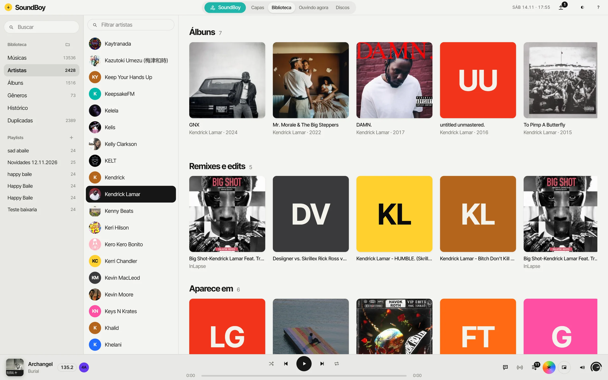
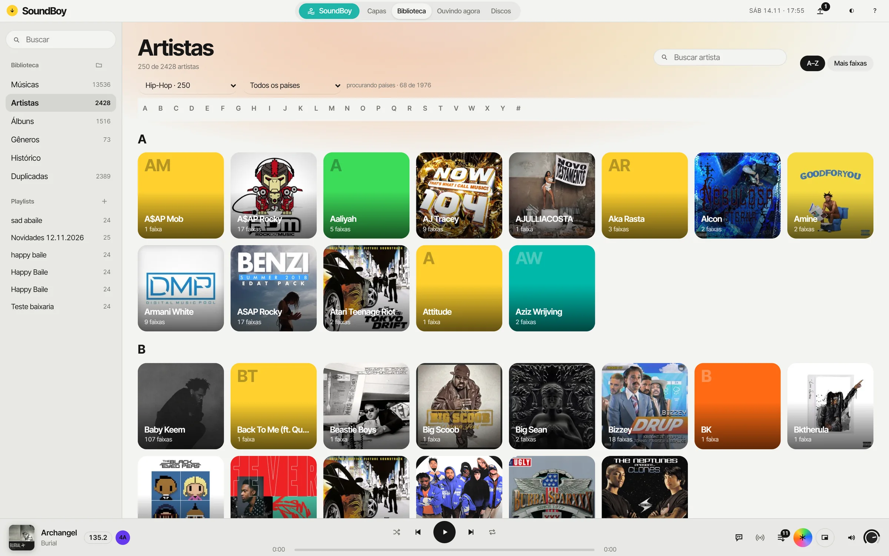
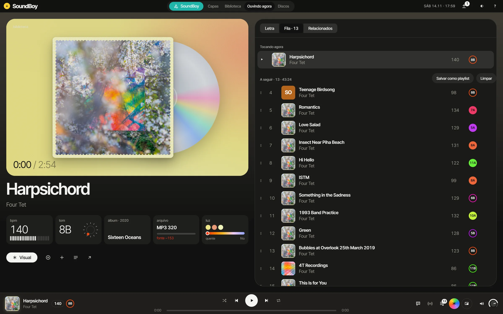

SoundBoy
As músicas que você guardou merecem ser ouvidas assim.

Aquele disco que você baixou em 2009. O FLAC que você caçou por semanas. A demo que ninguém mais tem. Eles estão no seu computador, numa pasta qualquer, esperando alguém dar play do jeito certo.
Cada disco acende a tela com a cor dele.
O SoundBoy tira as cores da capa e transforma em luz. Ela respira no andamento da música e para quando você pausa. O CD sai da capa e gira enquanto toca. Do lado, BPM, tom e qualidade do arquivo, pra quem gosta de saber o que está ouvindo.

Uma página pra cada artista que você ama.
Foto, bio e links oficiais. As suas mais tocadas. Álbuns separados de remixes, edits e participações, porque a discografia de verdade não é a mesma coisa que a pasta de downloads. E quando o programa erra, você corrige.



O mesmo disco, cinco vezes, em três pastas.
Todo mundo tem. O SoundBoy acha as cópias, sugere ficar com a de melhor qualidade (WAV e FLAC na frente), deixa você ouvir uma prévia de cada versão e escolher. As cópias somem das listas. Nenhum arquivo é apagado sem você mandar.

Um toca-discos inteiro na sua tela.
Vinil, CD, picture disc. O disco gira no BPM da música, com a capa no selo. Dá pra trocar de aparelho, escolher o disco na estante e gravar um trecho.

Pra ouvir de luz apagada.
O modo noturno deixa tudo escuro e só a música brilha. Um botão no topo troca, e o SoundBoy lembra da sua escolha.

Ficha técnica.
Dê play no que é seu.
Gratuito para Windows 10 e 11. Instala sem administrador.
O arquivo SoundBoy-instalador-0.9.exe.
O Windows pode avisar que o app não é reconhecido, porque ele ainda não tem assinatura. Clique em Mais informações e depois em Executar assim mesmo.
Na primeira vez, o SoundBoy procura as músicas do computador e monta a biblioteca. Nada é movido nem apagado.
Vision, o simulador de DJ, está a caminho.